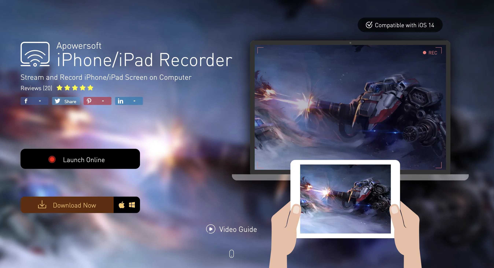
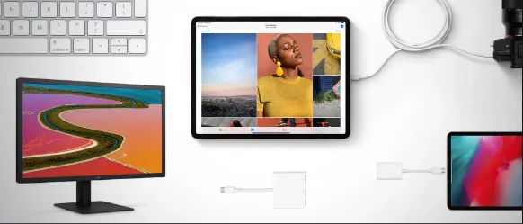

How to Mirror Your iPad Screen on a Windows Computer: A Simple Guide
How to Mirror Your iPad Screen on a Windows Computer

Hey there, friends! Many of us desire to mirror our iPad screens to our computers. While this is a breeze with a MacBook using QuickTime Player, things get tricky when you want to mirror your screen on a Windows PC. Typically, purchasing software would be required. But not today!
In this guide, I'll provide a straightforward solution for mirroring your iPad screen to your Windows computer. Let's dive right in!
First things first, navigate to Apowersoft's iPad Recorder page in your browser. Once there, click on the software to open it, and then download the version for Windows.
Once you have downloaded the short file, install the program. You'll be prompted to select the English language. Click 'Next', accept the agreement, choose the drive where you'd like to install the program (I suggest drive C), and decide whether you want to create desktop shortcuts. Finally, click 'Next' and 'Install'.

Launching the Program
Upon completing the installation, run the program and head straight to evaluation to check if it's working correctly. It's mostly smooth sailing from here, but make sure your iPad and computer are on the same Wi-Fi network.
On your iPad, simply click on 'Screen Mirroring', then select 'Apowersoft'. You're now mirroring your iPad to your Windows PC! You can make it full screen, and if you wish to remove any watermarks or record the screen, there are additional paid options. To stop mirroring, just click 'Stop Screen Mirroring' on your iPad. Enjoy your mirrored screen, and happy connecting!